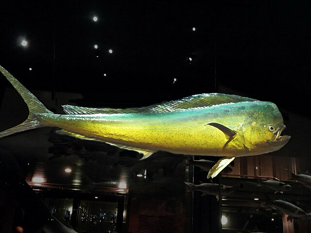

理論的アプローチ
gantt
title 卒論生のスケジュール
dateFormat YYYY-MM-DD
先行研究の調査 :active, 2024-06-01, 2024-08-30
section 魚ロボットの開発
魚ロボットの小型化＆無線化 :active, 2024-06-01, 2024-08-31
プール，カメラ，PCなどの準備: 2024-06-01, 2024-08-31
section 理論的整理と実験
魚の推進力と運動の関係を理論的に整理 : 2024-06-01, 2024-07-31
実際の魚の推進力と運動の関係を実験で調査 : 2024-08-01, 2024-10-01
理論と実験の比較・考察 : 2024-08-01, 2024-10-01
section 可視化実験と理論の検証
流れの可視化実験の準備 : 2024-07-15, 2024-09-01
可視化と理論に基づく結果の考察 : 2024-09-01, 2025-01-31
section 制御の最適化
推進力制御のためのプログラムの原型を開発 : 2024-07-15, 2024-09-01
制御実験と最適化 : 2024-09-01, 2025-02-01
section 発表と執筆
進捗チェック : 2024-06-21, 2024-06-21
中間発表 : 2024-08-02, 2024-08-02
(海岸工学講演会の手伝い) : 2024-11-05, 2024-11-08
卒論発表会 : 2025-02-18, 2025-02-19
土木学会東北支部発表会 : 2025-03-03, 2025-03-03Background¶
魚の運動に関する先駆的なLightHill(1960)の理論は，魚の推進力を，魚がくねることに伴う仕事率とそこから流体が奪いさるエネルギー率から計算するものである．また，この推進力を効率的に生み出すために最適な泳ぎ方として，尾に向かって振幅が大きくなる進行波型の泳ぎ方を提案している．
この理論では，魚の中央部分の断面形状が尾に向かって緩やかに変化し，また尾鰭でのみ渦が放出されることを仮定している．このような状況は，多くの魚に当てはまる有効な理論と考えられており，これまで開発された魚ロボットの多くは，この理論に基づき設計されている．しかし，魚ロボットの多くは関節が多く緩やかな断面形状を持っていない．この理論に基づき最適な遊泳法を検討するためには，魚の周りの流れを直接観測し，理論が課す仮定がどの程度成り立っているかを検証する必要がある．
Slender Fish with Ribbon-Shaped Fins
理論（Slender Fish with Ribbon-Shaped Fins）¶
この理論は，Wu, T.Y. (1971)の"Slender Fish with Ribbon-Shaped Fins"に基づく．
魚のヒレでの分類¶
| リボンフィン型 (Ribbon-Shaped Fins) | 両方のフィン型 (Both Fin Types) | 帆形フィン型 (Sail-Shaped Fins) |
|---|---|---|
| シイラ (Coryphaena hippurus) | ブルーフィンツナ (Thunnus thynnus) | バラクーダ (Sphyraena pinguis) |
| ヒラマサ (Yellowtail amberjack) | カツオ (Katsuwonus pelamis) | ニジマス (Oncorhynchus mykiss) |
| タイ (Pagrus major) | - | サケ (Oncorhynchus nerka) |
| キタノホッケ(Pleurogrammus azonus) | - | ボラ (Mugil cephalus) |

体を変位\(h(x,t)\)でくねらせながら，速度\(U\)で魚が泳いでいる．魚の仕事率（パワー）\(P\)は，流体を動かすために費やされる仕事率\(E\)と，推進に関する仕事率\(UT\)に分けることができる．ここで\(T\)が推進力である：
魚の仕事率\(P\)と流体が奪い取る仕事率\(E\)を理論的に求め，そこから推進力\(T\)を計算することができる．
魚の仕事率\(P\)¶
魚の仕事率は，魚が受ける揚力\(\mathcal{L}(x,t)\)かける魚の局所的な変位速度\(\frac{\partial h}{\partial t}(x,t)\)を積分しマイナスをつけた（作用反作用）ものである．
魚の変位\(h(x,t)\)とその変化\(\frac{\partial h}{\partial t}(x,t)\)はわかっており理論的に求める対象ではない．なので，理論的に求めるものは，魚の受ける揚力\(\mathcal{L}(x,t)\)である．
魚の受ける揚力\(\mathcal{L}(x,t)\)¶
魚が持つ仮想質量の運動量は\(\rho A(x) V(x,t)\)と表される．ここで，\(\rho\)は水の密度，\(\rho A(x)\)は仮想質量，\(V(x,t)\)は断面方向の変位速度である．
ここで，\(D \equiv \left(\frac{\partial}{\partial t} + U \frac{\partial}{\partial x} \right)\)である． 単位長さあたりの\(z\)方向の運動量の時間変化は，単位長さあたりの揚力であり，次のように表される．
\(0<x<1\)の部分で，\(A(x)\)が\(x\)方向に変化せず続いていると考えると，演算\(D\)の外に出すことができる．
Note
魚の渦放出の効果を考慮することは，\(A(x)\)を定数として扱うことと同じである．
Wu (1971)
in which the virtual mass \(\rho A(x)\)refers to the fish body cross section alone, not including the cross section of the vortex sheet as a part of an effective “virtual body.” Thus the effect of vortex shedding is equivalent to treating \(A(x)\) as if it is a constant in calculating the changes of the cross flow momentum. Alternatively, this effect may be considered to contribute a correction term \(\rho V U dA/dx\) to the \(\mathcal{L}\) based on the calculation without accounting for the effect of vortex shedding, i.e., the \(\mathcal{L}\) given by (2.16a). We note that \(dA/dx < 0\) in the trailing-edge section, \(0 < x < 1\).
結果だけを示すと
流体が奪い取る仕事率\(E\)¶
魚の単位長さあたりに流体が奪い取る運動エネルギーは，\(\frac{1}{2} \rho A V^2\)である．したがって，運動エネルギーの時間変化は，次のように表される．
推進力\(T\)¶
これに，\(V=\frac{\partial h}{\partial t} + U \frac{\partial h}{\partial x}\)を\(h_t\)に代入すると，シンプルになる．
流れの可視化
流れの可視化を行うには，強力なレーザー，扱いが面倒なトレーサー，そしてハイスピードカメラ・動画解析ソフトが必要な印象がある．しかし，Cierpka et al. (2021)によると，スマートフォンのカメラを用いて流れの可視化が可能だという．そこで利用したレーザーの特性は以下の通りである．（流れは緩やかなのでそもそもハイスピードでなくてよい流れ．レーザーのスペックが参考なる）
- Continuous wave (CW) laser diode
- Wavelength: 532 nm
- 40 mW
レーザークラスとその特性
| クラス | 波長 | 出力 | 特性 |
|---|---|---|---|
| クラス1 | 400-700nm（可視光），その他の波長も含む | 極めて低出力，最大1mW以下 | すべての使用条件下で安全．例：レーザープリンター |
| クラス1M | 302.5-4000nm（可視光，赤外線） | 視認範囲では安全，光学機器を使用すると危険 | 裸眼での直接視認は安全ですが，光学機器を使用して見ると危険． |
| クラス2 | 400-700nm（可視光） | 最大1mW | 短時間の偶然の露光であれば安全．例：レーザーポインター |
| クラス2M | 400-700nm（可視光） | 最大1mW | 光学機器を使用して見ると危険． |
| クラス3R | 400-700nm（可視光） | 最大5mW | 一定の条件下で危険，実際の怪我の可能性は低い． |
| クラス3B | 315-4000nm（赤外線，可視光を含む） | 最大500mW | 直接視認や鏡面反射が危険，拡散反射は通常安全． |
| クラス4 | 180nm-1mm（紫外線から赤外線） | 500mW以上 | 目や皮膚に対して極めて危険，火災のリスクあり．拡散反射も危険． |
トレーサーは，直径 \(d_p = 20 \, \mu m\) のポリアミド粒子を用いた．
-
粒子の大きさと密度: 粒子の直径が小さく（20 \(\mu m\)），密度が水に近い（$\rho _p = 1150 \, kg/m^3 $）ため，流れに対して良好に追従できる性質を持っている．
-
ストークス数: 結果として得られたストークス数が\(St \approx 6 \times 10^{-4}\)と非常に小さく，これは\(10^{-1}\)よりも小さいことを示している．ストークス数が小さいほど，粒子が流体の流れを高い忠実度で追従できることを意味する．
ナノバブルとレーザーを使った流れの可視化はできないだろうか？¶
ポリアミド粒子の代わりに，ナノバブルを用いることで，流れの可視化を行うことができるだろうか？ナノバブルの直径は，ポリアミド粒子の直径よりも小さいため，流れに対して追従する能力が高いと考えられる．このバブルがレーザーで可視化できれば，流れの可視化がより簡単になるかもしれない．
日本電興 微細気泡 ナノバブル発生キット 樹脂 シャワーヘッド用 ND-NBSH
SANEI 洗濯機用アダプター ウルトラファインバブル発生 簡単取付＆工具不要 洗い残しに差が出る洗濯機とホースの間に G¾ PM100-20
References¶
- Cierpka, C., Otto, H., Poll, C., Hüther, J., Jeschke, S., & Mäder, P. (2021). SmartPIV: flow velocity estimates by smartphones for education and field studies. Experiments in Fluids, 62(8), 172. https://doi.org/10.1007/s00348-021-03262-z
Title：細長体理論に基づく魚ロボットの効率的な推進制御¶
LightHill(1960)の理論は，ある魚の運動から推進力を見積もることができる．これを利用して，反対に推進力から魚の運動を決めることができれば，魚の制御や設計にとても役立つ．これまでこのような方法で魚ロボットの制御を行った研究はない．
実際の魚であっても，この理論がどの程度成り立っているかは不明である．特に，関節の多い魚ロボットに対してはこの理論の適用が可能か十分に調べる必要があるだろう．
本研究では，LightHill(1960)の理論を出発点として，魚ロボットの動きと，推進力の関係を実験から調べる．魚の周りの流れを可視化し，理論が課す仮定がどの程度成り立っているか，理論を成り立たせるための魚の形状や運動を検証する．また，指定した推進力で魚を進ませる方法を提案する．
暫定的な研究の流れ
- 魚の無線化
- 魚の推進力と運動の関係を理論的に整理する
- 魚の推進力と運動の関係を実験から調べ，理論と比較する
- 魚の周りの流れを直接的に可視化し，理論が課す仮定がどの程度成り立っているかを検証，実験結果と理論とのずれの原因を考察する
- 理論の仮定をより成り立たせる工夫をする（理論が課す仮定が妥当な場合が効率的だという考えのもと）
- それにより効率が向上するか，また理論でうまく説明できるかを検証する
- 命令した推進力通りに魚が動くように制御できるようになる
References¶
全体的レビュー
- Lauder, G. V. (2015). Fish locomotion: Recent advances and new directions. Annual Review of Marine Science, 7, 521–545. https://doi.org/10.1146/annurev-marine-010814-015614
- Tanaka, I., & Nagai, M. (1996). 抵抗と推進の流体力学「水棲動物の高速遊泳能力に学ぶ」. シップアンド・オーシャン財団, 1–214.
LightHillの流体力学的な研究
- Lighthill, M. J. (1960). Note on the swimming of slender fish. Journal of Fluid Mechanics, 9(2), 305–317. https://doi.org/10.1017/S0022112060001110
- Lighthill, M. J. (1970). Aquatic animal propulsion of high hydromechanical efficiency. Journal of Fluid Mechanics, 44(2), 265–301. https://doi.org/10.1017/S0022112070001830
-
Lighthill, M. J. (1971). Large-amplitude elongated-body theory of fish locomotion. Proceedings of the Royal Society of London. Series B. Biological Sciences, 179(1055), 125–138. https://doi.org/10.1098/rspb.1971.0085
-
Wu, T. Y. T. (1971). Hydromechanics of Swimming of Fishes and Cetaceans. Advances in Applied Mechanics, 11(C), 1–63. https://doi.org/10.1016/S0065-2156(08)70340-5
魚ロボットの機構や制御に関する研究
- Duraisamy, P., Kumar Sidharthan, R., & Nagarajan Santhanakrishnan, M. (2019). Design, Modeling, and Control of Biomimetic Fish Robot: A Review. In Journal of Bionic Engineering (Vol. 16, Issue 6, pp. 967–993). https://doi.org/10.1007/s42235-019-0111-7
- Kang, S., Yu, J., Zhang, J., & Jin, Q. (2020). Development of Multibody Marine Robots: A Review. IEEE Access, 8(November 2019), 21178–21195. https://doi.org/10.1109/ACCESS.2020.2969517
- 藤原慎平. (2016). 高い運動性能を有する魚類型ロボット用泳動機構の 開発に関する研究 高い運動性能を有する魚類型ロボット用泳動機構の 開発に関する研究 藤 原 慎 平. https://doi.org/https://doi.org/10.15017/1807010